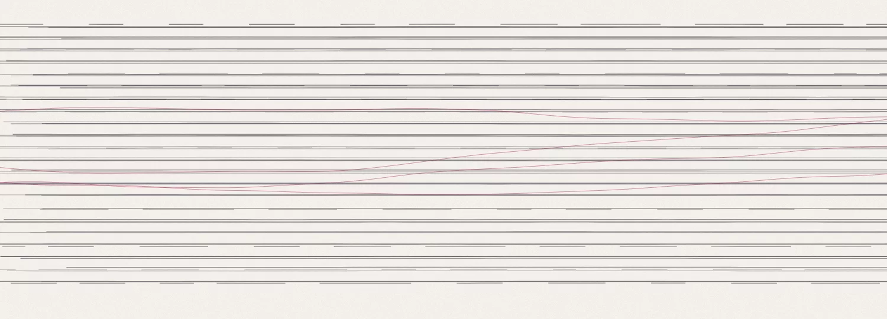

Business systems
CRM, finance, service desk, collaboration. The software the company actually runs on, treated as infrastructure, not as somebody else's problem.
Digerati Experts
Chandler, Arizona · 325-480-9870
This is the story of the environment your business already runs on, told the way Digerati Experts sees it: cybersecurity first, proactive by default, compliance ready, and local enough to answer the phone.
Your environment, in ten chapters
A working company accumulates systems the way a desk accumulates paper. Each one arrived for a good reason.
And in the gaps between them wait ransomware, phishing, lost data, insider mistakes, unpatched software, and a 45 day breach-notification clock that starts whether you are ready or not.
Each one works.
The environment doesn't.
Then the environment wakes up
DE enters. Not as a giant logo. As an architectural layer.
Identity becomes one spine, and access follows it everywhere.
Security stops being a product you bought. It becomes a property of the whole.
Data starts moving. Automation starts working. People keep the approvals.
Fourteen disciplines. One operating environment.
Nobody wakes up wanting a firewall. You want the company protected, the team productive, the busywork gone, the auditor satisfied.
Choose an outcome. Watch the map answer.
Same environment every time. Different parts doing the work.
Different professions, same shape of problem: regulated data, real deadlines, and no appetite for running an IT department.
Client privilege is a security property. Matter files, email, and identity handled to ABA expectations.
Tax data under IRS and FTC rules, with the busiest season of the year treated as the design constraint, not the excuse.
HIPAA compliance and patient data protection, carried by the environment instead of by one worried office manager.
Wire fraud prevention and transaction security, because one spoofed email can move someone's closing money.
Veterinary practice systems and client data, kept running through days that never pause for maintenance windows.
And across Greater Phoenix, the growing companies that simply want technology to stop being the thing they think about.

The stack above the laptops is still technology. DE works there too.
CRM, finance, service desk, collaboration. The software the company actually runs on, treated as infrastructure, not as somebody else's problem.
APIs, integrations, event-driven workflows. The work between systems is where whole days disappear, so that is where DE removes it.
Agents and applied AI where they earn their keep, with human approval kept visible. One domain of fourteen. Not the company.
Voice, messaging, meetings, and the infrastructure under them, run as part of the environment instead of a separate bill.
Hardware, software, licensing, procurement. Outcomes first, products second, and the vendors never become the hero.
The ProActive Ecosystem is not a bundle of tools. It is the cadence DE runs your environment on: designed before it is defended, monitored before it breaks, measured so the roadmap is a plan and not a guess.
Security lives inside that cadence, not beside it. Identity, devices, email, network, cloud, data, and the people using them form one security surface, reviewed as one. Multifactor authentication alone blocks 99%+ of unauthorized access attempts (Microsoft 2025); the cadence is what keeps it, and everything around it, actually turned on.

ProActive depths · published starting rates
Depths are a fit, not a ranking. The fit conversation is the real product: see plans and pricing.
DE's own surfaces and studies, running in production today.
Every engagement starts by reading the environment: identity, endpoints, email, backups, and the controls around them, returned as findings a business owner can act on.

DE Desk, the client portal, the store with its solution builder: interfaces DE engineered and operates, not white-labeled panels with a logo swapped in.
The bench behind the work includes Pax8, Sophos, Huntress, SonicWall, ThreatLocker, Zoho, Lenovo, TD SYNNEX, and more than forty other vendors DE manages so clients never have to.


Principal-led means the person who scoped your environment is the person who answers for it. No account manager between you and the responsibility.
3165 S Alma School Rd, Suite 29, Chandler, AZ 85248Start where DE starts with every client: Get My Cyber Risk Assessment.
Or take the quieter doors: solutions, the store, client support, the client portal.